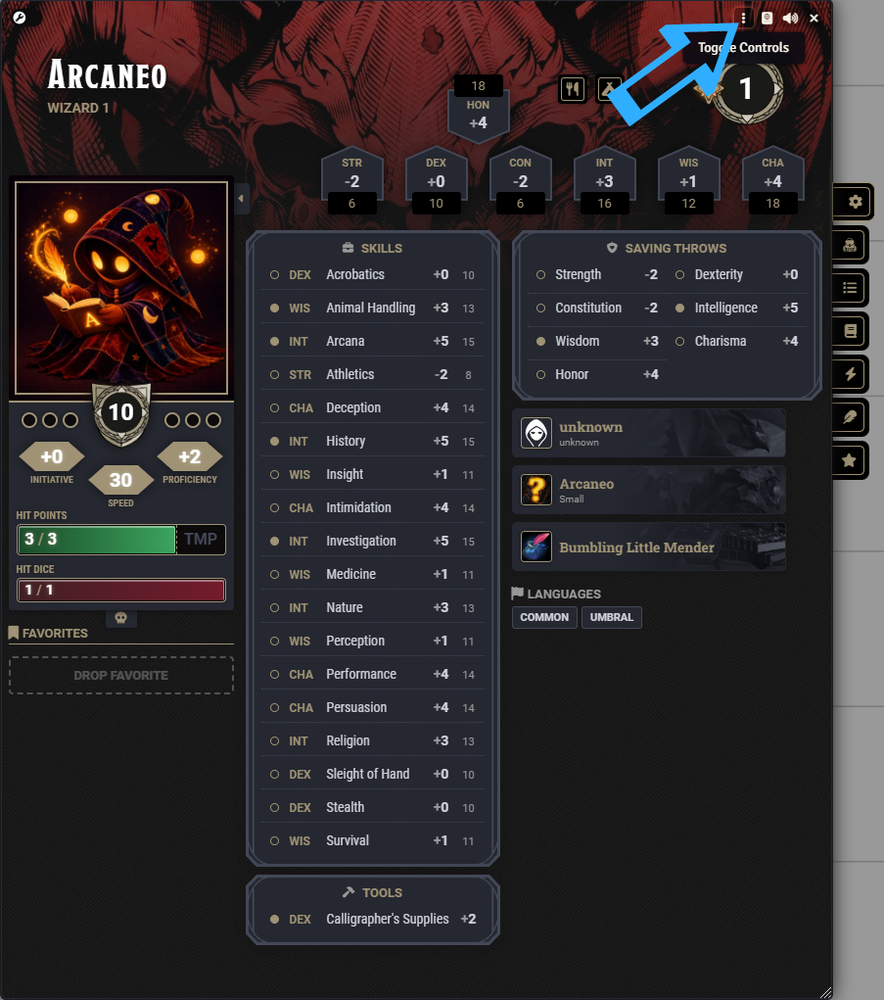
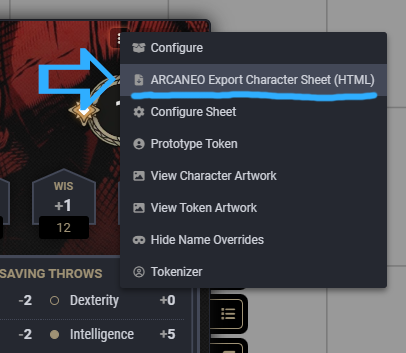

How to Install ARCANEO – DnD5e Character Sheet Exporter
You can install the module directly from the Foundry VTT module browser.
Method 1 — Foundry Module Browser
Step 1 — Open Foundry VTT

Step 2 — Go to Add-on Modules

Step 3 — Click Install Module

Step 4 — Search the module
Search for: ARCANEO – DnD5e Character Sheet Exporter

Step 5 — Click Install

Method 2 — Manifest URL
If the module does not appear yet in your Foundry client, you can install it using the Manifest URL.
Step 1 — Open Add-on Modules

Step 2 — Click Install Module

Step 3 — Paste the Manifest URL
Paste this Manifest URL:
https://raw.githubusercontent.com/ARCANEO-dev/arcaneo-dnd5e-character-sheet-exporter/main/module.json

Step 4 — Click Install

Enable the Module
Once installed, enable the module inside your world and begin exporting your character sheets.

Compatibility
Compatible with Foundry VTT v13 and the DnD5e system (5.2+).
Feedback
If you encounter any issues or have suggestions for improvements, feel free to share your feedback.
Your ideas help shape the future of ARCANEO tools and modules.